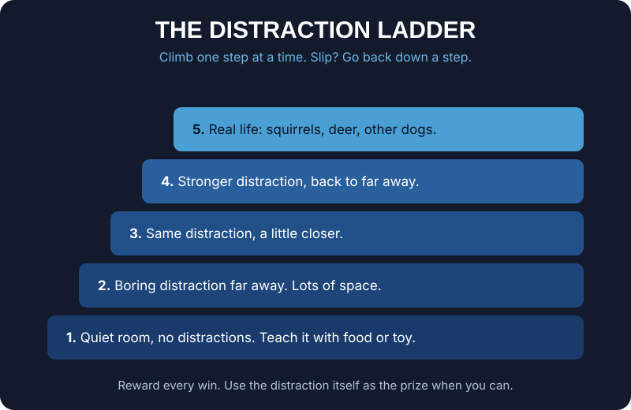

Your dog does not care much about the treat in your pocket when there is a fresh smell on the fence post. Most owners see that as a problem. We see it as an opportunity. That smell is a reward, and if you are the one who decides when your dog gets it, you just found the best paycheque you will ever have.
What the Premack principle is
The idea comes from a psychologist named David Premack. Put simply, a dog will do something it wants less to get something it wants more. You already know it from your own childhood: eat your supper, then you can go outside and play.
For dogs, it means the things they love doing, like sniffing, saying hello and chasing a ball, can be used as rewards for the things we ask of them. You do not need to beat the fence post with a better treat. You just need to make the fence post the treat.
Everyday rewards your dog already wants
Sniffing
On a walk, your dog pulls toward a smell. Stop. Ask for a few steps of nice heeling, or a sit. The moment you get it, say "ok" and let your dog go sniff. Your dog learns that good manners on the leash are what open the door to the good stuff.
Greeting
Your dog wants to meet a friendly dog or person. Ask for calm first, a sit or a few quiet steps beside you. When your dog gives it, "ok" is the release to go say hi. If your dog lunges or jumps, the greeting does not happen yet. Calm earns the hello, pulling does not.
Chasing the ball
For ball crazy dogs, the throw is worth more than any food. Hold the ball, ask for a sit or a down, and throw it the instant your dog does it. You can even use it for recall: call your dog in, and the next throw is the reward for coming back.
Why "ok" matters
"Ok" is our release word. It tells the dog "you are free now, go get it". That makes it the bridge between what you asked and what the dog wants. Do not let your dog help itself before you say it. If your dog breaks for the smell or the ball on its own, the reward is gone, and you try again. We never teach a separate stay. Sit means sit until "ok", and that is what makes the release so powerful.
Climb the distraction ladder
Premack works best when you start small. Use the same distraction ladder we use for all proofing. Start with something mild and far away, like a toy on the floor across the room. Get a sit, say "ok", let your dog go to it. Once that is easy, move a little closer, then try something more exciting, then take it outside. Change one thing at a time. If your dog cannot hold it together, step back down.

When it works and when it does not
The whole thing rests on one rule: you have to control access. If your dog can get to the reward without you, it is not your reward to give.
It works well with a leash, a long line or a fenced area, where you decide if and when your dog gets to the smell, the dog or the ball. It also works when the thing your dog wants is safe for it to have.
It does not work when your dog is loose and the squirrel is right there. Your dog does not need your permission, so it will not wait for it. It also does not work for things your dog should never have, like chasing deer, cats or cars. Those can never be the reward. And if your dog is so wound up that it cannot think, the reward is too strong for where it is on the ladder. Add distance and try again.
One more trap: if your dog gets free access to the yard, the toys and the neighbourhood smells all day, those things lose their power as rewards. Keep the good stuff on your terms.
How it fits with our marker and reward
Our method stays the same: lure, mark, word, reps, proof. Premack slides right into the marker system. When your dog does what you asked, say "yes" to mark the moment, then "ok" to release it to the reward. Food and toys still do most of the teaching early on. Premack takes over more and more as you start proofing out in the real world, because real life is full of rewards you can use.
How it fits with fair corrections
Premack is not a replacement for corrections, and corrections are not a replacement for Premack. They do different jobs.
When your dog knows the behaviour well and still chooses the distraction, that is where a fair correction comes in. We give the "no" marker first, then a correction matched to how strong the distraction is, with leash pressure or the e-collar at the level that dog needs. Then we help the dog get it right, and pay it, often with the very thing it wanted. The correction says "not like that". The reward says "like this, and here is what you get". We never correct a dog that does not understand, and we do not use the e-collar on puppies.
Used together, the dog learns that listening to you is the fastest way to everything it loves. That is a dog that wants to work with you, not around you.
Keep reading
If you are new to the terms, start with The Four Quadrants of Dog Training, in Plain English. For what to do when the distraction wins anyway, read When the Squirrel Wins: Competing Reinforcers in Plain English.
Starting with an e-collar? Our free guide, E-Collar Introduction (free PDF), covers the first steps. To work on this with us in person, see our training courses, from Puppy Foundation to Basic Obedience and beyond.